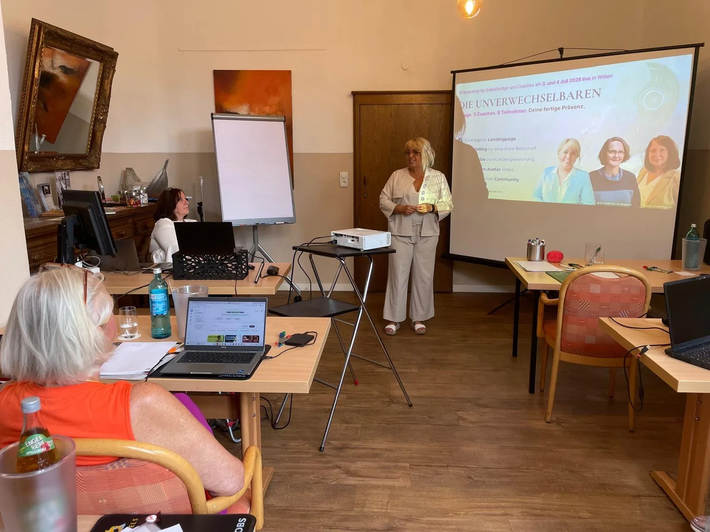

Mit Claudia Conen
Du wirkst immer. Die Frage ist nur: wie?
Claudia Conen ist Expertin für menschliche Wirkungskraft im KI-Zeitalter. Seit 37 Jahren arbeitet sie als Coach und Trainerin mit Menschen, für die viel davon abhängt, wie sie ankommen.
Aktuell: 7-Tage-Wirkungskraft-Challenge · Start 26. OktoberChallenge · Start 26.10. · Platz sichernTermin bestätigen
Für Geschäftsführung, Führungskräfte, HR, Vertrieb und Veranstalter.
HauptwegeFür Coaches, Trainer, Speaker, Berater, Autoren und Selbstständige.
HauptwegeClaudia gibt Unternehmensmomenten eine Stimme, eine Richtung und eine Wirkung.
Claudia buchenWorkshop, 90-Tage-Programm oder Sparring: vor Ort oder online.
FormateWer hier spricht und warum Wirkung ihr Lebensthema ist.
Hauptwege
Seit 37 Jahren als Coach und Trainerin unterwegs, heute auch als Keynote Speakerin.
Claudia kennenlernenEin Tag, an dem du verstehst, wie Menschen entscheiden, klar bekommst, wofür du stehst, und erlebst, wie du wirkst. Du gehst mit deiner Kernbotschaft und deinem 60-Sekunden-Auftritt auf Video nach Hause.
Für Unternehmer, Selbstständige und Führungskräfte, die fachlich überzeugen und wollen, dass es auch ankommt.

Texte, Bilder, ganze Auftritte gibt es heute auf Knopfdruck. Wenn alles vergleichbar ist, entscheidet am Ende der Preis, oder das Vertrauen in den Menschen dahinter.
Deshalb arbeiten wir an diesem Tag offen mit KI, und zwar genau dort, wo sie stark ist: Struktur, Varianten, Tempo. Alles andere kommt von dir: deine Geschichte, deine Stimme, deine Haltung.
KI für alles, was vergleichbar ist. Du für das, was unersetzlich ist.
Dieselben Fragen wie in der 7-Tage-Challenge, nur live, mit Feedback und im direkten Vergleich.
Was Aufmerksamkeit, Gefühl und Vertrauen mit einer Kaufentscheidung zu tun haben, und warum der erste Eindruck schneller ist als jedes Argument.
Was kannst du wirklich gut, wofür stehst du, und was unterscheidet dich von allen, die dasselbe anbieten?
Aus deinem Können wird eine Kernbotschaft in einem Satz. Die KI liefert Varianten, du entscheidest, was nach dir klingt.
Stimme, Pausen, Blick und Haltung. Du wirst gefilmt, bekommst persönliches Feedback und probierst es sofort neu.
Bewusst nicht überladen: vier Blöcke, viel Übung, echte Pausen.
Kaffee, Namensschild, erste Gespräche.
Du stellst dich in 30 Sekunden vor, so wie heute. Die Aufnahme bleibt bis zum Nachmittag liegen.
Aufmerksamkeit, Gefühl, Vertrauen: was im Kopf deines Gegenübers passiert, bevor es dir zustimmt.
Selbsterkenntnis und Positionierung, in Übungen zu zweit. Am Ende steht der Rohstoff für deine Botschaft.
Die KI macht aus deinem Rohstoff in Minuten mehrere Pitch-Varianten. Du wählst, kürzt und machst sie zu deinen Worten.
Tempo, Pausen, Betonung, Blick und Hände. Training in kleinen Runden, mit Feedback.
Vor der Gruppe gesprochen und gefilmt. Danach der Vergleich mit deinem Vorher-Video.
Was du ab morgen anders machst, und wie du dranbleibst.
In einem Satz, der nach dir klingt und den andere weitererzählen können.
Als Video auf deinem Handy, für Netzwerk, Website oder das nächste Kennenlernen.
Du siehst und hörst selbst, was sich an einem Tag verändert hat.
An einem Tag lässt sich viel erkennen und manches sofort verändern. Eine ganze Keynote, eine neue Stimme oder eine fertige Positionierung entstehen an einem Tag nicht, und wer das verspricht, übertreibt.
Wer danach dranbleiben will: Im 90-Tage-Mentoring arbeitest du zwölf Wochen lang an genau diesen Themen weiter, in einer kleinen Gruppe.
Sieben Tage, sieben Impulse. Du erlebst, wie du wirkst.
Zur ChallengeErkennen, formen, ausprobieren, mit Feedback und Video.
Aus Erkenntnis wird Gewohnheit, an deinem eigenen Praxisfall.
Zum MentoringFür dein Team: Den Workshop gibt es auch bei euch im Unternehmen, ab 2.900 € zzgl. MwSt. pro Tag (ab 3.451 € inkl. MwSt.), bis 12 Personen. Anfragen
Claudia Conen ist Expertin für menschliche Wirkungskraft im KI-Zeitalter. Seit 37 Jahren arbeitet sie als Coach und Trainerin mit Menschen, für die viel davon abhängt, wie sie ankommen.
„Wer Vertrauen weckt, gewinnt.“
Mehr über Claudia
Nein. Dein Handy reicht für Video und KI. Bring ein Thema mit, an dem dir etwas liegt: dein Angebot, eine Präsentation oder ein Gespräch, das bald ansteht.
Nein, aber es lohnt sich. Wer die Challenge gemacht hat, kennt die Fragen schon und holt mehr aus dem Tag heraus.
Offen und gezielt: für Struktur, Varianten und Tempo. Was du sagst und wie du es sagst, entscheidest du. Du brauchst keinen bezahlten Zugang, ein kostenloser reicht.
Deine Aufnahmen entstehen auf deinem Gerät und gehören dir.
Der STARTPLATZ liegt im Mediapark, Im Mediapark 5, 50670 Köln. Im Gebäude gibt es eine Tiefgarage, Bus und Bahn halten in der Nähe.
Stornobedingungen: bitte von dir
Höchstens 12 Plätze, damit jede und jeder gefilmt wird und Feedback bekommt.
Platz sichern Buchungslink fehlt